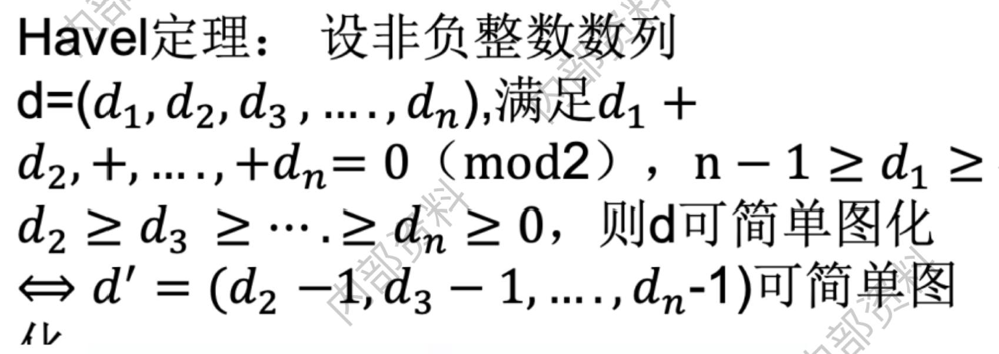

10.1.1 度序列可简单图化
可简单图化的充要条件：

例题：
> 解法：每次度序列按非递增顺序排列，删除度最大的节点，更新其他节点的度，重新排列，继续重复上述过程。
应用：Frogs' Neighborhood > | ---------------------------- | --- | ------------------------ | --- | ------------- | > | Time Limit: 5000MS | | Memory Limit: 10000K | | | > | Total Submissions: 15543 | | Accepted: 6129 | | Special Judge | > Description > >未名湖附近共\(N\)个大小湖泊\(L_1, L_2, \cdots, L_n\)(其中包括未名湖)，每个湖泊\(L_i\)里住着一只青蛙\(F_i(1 \le i \le N)\)。如果湖泊\(L_i\)和\(L_j\)之间有水路相连，则青蛙\(F_i\)和\(F_j\)互称为邻居。现在已知每只青蛙的邻居数目\(x_1, x_2, \cdots, x_n\)，请你给出每两个湖泊之间的相连关系。 > Input > > 第一行是测试数据的组数\(T(0 \le T \le 20)\)。每组数据包括两行，第一行是整数\(N(2 < N < 10)\)，第二行是\(N\)个整数，\(x_1, x_2,\cdots, x_n(0 \le x_i \le N)\)。 > Output > > 对输入的每组测试数据，如果不存在可能的相连关系，输出"NO"。否则输出"YES"，并用\(N\times N\)的矩阵表示湖泊间的相邻关系，即如果湖泊\(i\)与湖泊\(j\)之间有水路相连，则第\(i\)行的第\(j\)个数字为\(1\)，否则为\(0\)。每两个数字之间输出一个空格。如果存在多种可能，只需给出一种符合条件的情形。相邻两组测试数据之间输出一个空行。 > Sample Input > > 3 > > 7 > > 4 3 1 5 4 2 1 > > 6 > > 4 3 1 4 2 0 > > 6 > > 2 3 1 1 2 1 > Sample Output > > YES > > 0 1 0 1 1 0 1 > > 1 0 0 1 1 0 0 > > 0 0 0 1 0 0 0 > > 1 1 1 0 1 1 0 > > 1 1 0 1 0 1 0 > > 0 0 0 1 1 0 0 > > 1 0 0 0 0 0 0 > > NO > > YES > > 0 1 0 0 1 0 > > 1 0 0 1 1 0 > > 0 0 0 0 0 1 > > 0 1 0 0 0 0 > > 1 1 0 0 0 0 > > 0 0 1 0 0 0 > Source > > POJ Monthly--2004.05.15 Alcyone@pku